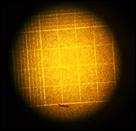

Blood + Lugols Iodine

Details
It has been established practice for 60 years to prepare thyrotoxic
patients undergoing thyroidectomy with Lugol's iodine. However, evidence
in support of its claimed benefits, namely a reduction in the vascularity
and friability of the toxic thyroid gland, is scanty. We have therefore determined
the effect of Lugol's iodine on thyroid blood flow, as measured by thyroid uptake
of thallium-201, in nine patients with Graves' disease and one euthyroid patient.
Thallium-201 uptake, as well as serum thyroxine and triiodothyronine, fell
significantly after treatment with iodine. Although not correlated with thyroid
function tests, thallium-201 uptake was significantly correlated with thyroid weight.
These results support the contention that thyroid blood flow is reduced in thyrotoxic
patients treated with Lugol's iodine.
Back